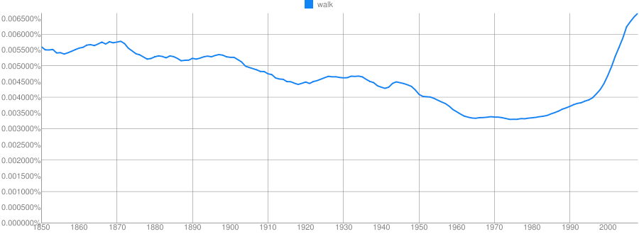
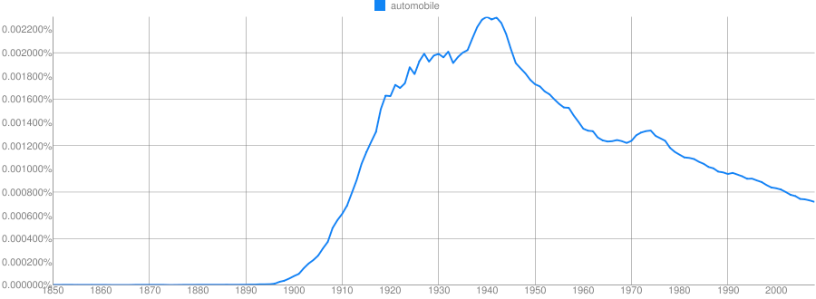
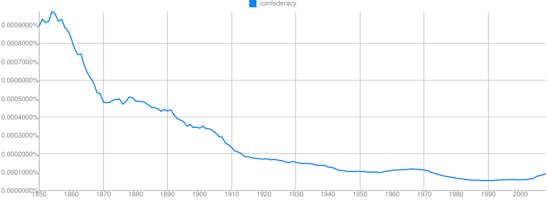
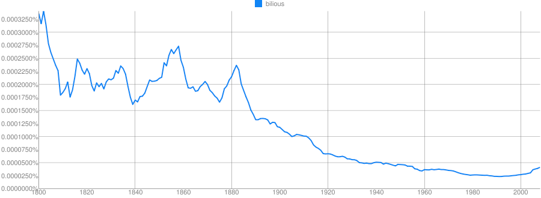
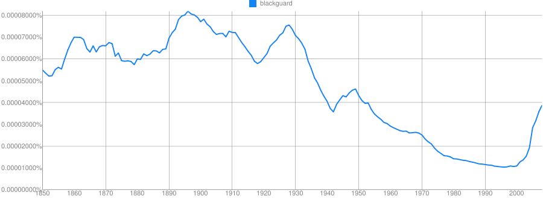
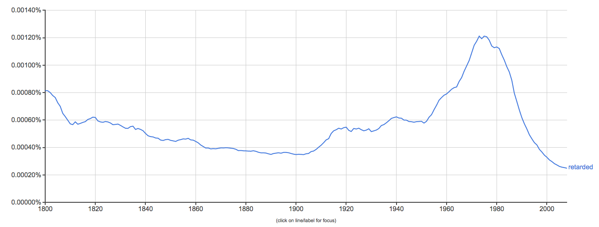
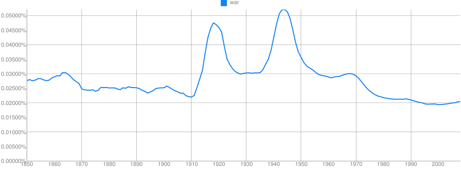
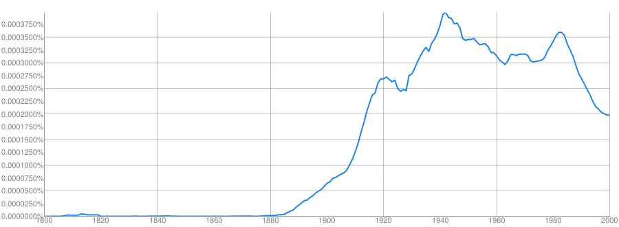
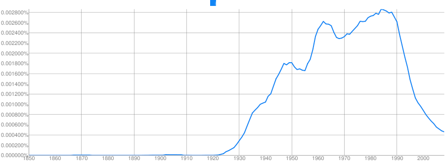
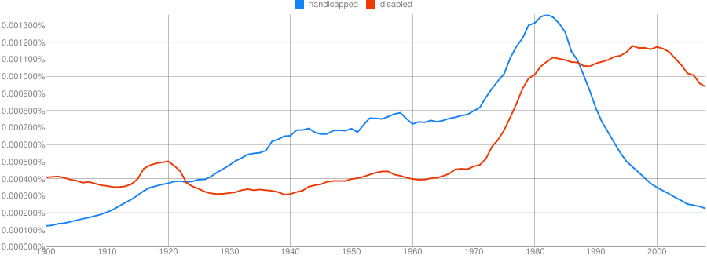

### Please help me out by completing a Mid-Quarter Teaching Feedback form! <http://savethevowels.org/feedback> --- <img width="50%" src="humorimg/thecount.jpg"> # N-Gram Language Models ### Will Styler - LIGN 6 --- ### The Plan - What are N-Grams? - Examples from the EnronSent Corpus - How N-Grams can form a language model - What are the strengths of N-Gram models? - What are their weaknesses? - How can we improve on them? --- ### What is an N-gram? - An N-gram is a sequence of words that is N items long - 1 word is a 'unigram', 2 is a 'bigram', 3 is a 'trigram'... - We identify sequences in the text, then count their frequencies - And that's N-Gram analysis - "How often does this sequence of words occur?" --- ### How do we find N-Gram counts? - Choose a (large) corpus of text - Tokenize the words - Count the number of times each word occurs --- ## Tokenization The language-specific process of separating natural language text into component units, and throwing away needless punctuation and noise. --- ### Tokenization can be quite easy > Margot went to the park with Talisha and Yuan last week. - ['Margot', 'went', 'to', 'the', 'park', 'with', 'Talisha', 'and', 'Yuan', 'last', 'week', '.'] --- ### Tokenization can also be awful. > Although we *aren't* sure why *John-Paul O'Rourke* left on the *22nd*, *we're* sure that he *would've* had his *Tekashi 6ix9ine* CD, *co-authored* manuscript (dated *8-15-1985*), and at least *$150 million* in *cash-money* in his *back pack* if he'd planned to leave for *New York University*. - ['Although', 'we', 'are', "n't", 'sure', 'why', 'John-Paul', "O'Rourke", 'left', 'on', 'the', '22nd', ',', 'we', "'re", 'sure', 'that', 'he', 'would', "'ve", 'had', 'his', 'Tekashi', '6ix9ine', 'CD', ',', 'co-authored', 'manuscript', '(', 'dated', '8-15-1985', ')', ',', 'and', 'at', 'least', '$', '150', 'million', 'in', 'cash-money', 'in', 'his', 'back', 'pack', 'if', 'he', "'d", 'planned', 'to', 'leave', 'for', 'New', 'York', 'University', '.'] --- ### Tokenization Problems - Which punctuation is meaningful? - How do we handle contractions? - What about multiword expressions? - Do we tokenize numbers? --- ### Tokenization can be done automatically - I used [nltk](http://www.nltk.org/)'s nltk.word_tokenize() function - ... with the Punkt English language tokenizer model. --- ### How do we find N-Gram counts? Choose a (large) corpus of text Tokenize the words - Count all individual words (using something like [nltk](https://www.nltk.org/)) - Then all pairs of words... - Then all triplets... - All quadruplets... - ... and so forth - The end result is a table of counts by N-Gram --- ## Let's try it in our data! - We'll use the [EnronSent Email Corpus](http://savethevowels.org/enronsent/) - ~96,000 DOE-seized emails within the Enron Corporation from 2007 - ~14,000,000 words - This is a pretty small corpus for serious N-Gram work - But it's a nice illustrative case --- <pre><code data-trim> #!/usr/bin/env python import nltk from nltk import word_tokenize from nltk.util import ngrams es = open('enronsent_all.txt','r') text = es.read() token = nltk.word_tokenize(text) unigrams = ngrams(token,1) bigrams = ngrams(token,2) trigrams = ngrams(token,3) fourgrams = ngrams(token,4) fivegrams = ngrams(token,5) </code></pre> --- ### Unigrams - 'The' 560,524 - 'to' 418,221 - 'Enron' 391,190 - 'Jeff' 10,717 - 'Veterinarian' 2 - 'Yeet' 0 --- ### Bigrams - 'of the' 61935 - 'need to' 15303 - 'at Enron' 6384 - 'forward to' 4303 - 'wordlessly he' 2 --- ### Trigrams - 'Let me know' 6821 - 'If you have' 5992 - 'See attached file' 2165 - 'are going to' 1529 --- ### Four-Grams - 'Please let me know' 5512 - 'Out of the office' 947 - 'Delete all copies of' 765 - 'Houston , TX 77002' 646 - 'you are a jerk' 35 --- ### Five-Grams - 'If you have any questions' 3294 - 'are not the intended recipient' 731 - 'enforceable contract between Enron Corp.' 418 - 'wanted to let you know' 390 --- ### Note that the frequencies of occurrence dropped as N rose - 'The' 560,524 - 'of the' 61,935 - 'Let me know' 6,821 - 'Please let me know' 5,512 - 'If you have any questions' 3,294 - *We'll come back to this later* --- ### OK, Great. - You counted words. Congratulations. - **What does this win us?** --- ### N-Grams give us more than just counts - If we know how often Word X follows Word Y (rather than Word Z)... - <strong>"What is the probability of word X following word Y?"</strong> - p(me | let) > p(flamingo | let) - We calculate log probabilities to avoid descending to zero - Probabilities are more useful than counts - <strong>Probabilities allow us to predict</strong> --- ### N-Grams can give us a language model - Answers "Is this likely to be a grammatical sentence?" - Any natural language processing application needs a language model - We can get a surprisingly rich model from N-Gram-derived information alone --- ### These probabilities tell us about Grammar - "You are" (11,294 occurrences) is more likely than "You is" (286 occurrences) - "Would have" (2362) is more likely than "Would of" (17) - "Might be able to" (240) is more common than "might could" (4) - "Thought Scott might could use some help..." - "Two agreements" (35) is more likely than "Two agreement" (2) - "Throw in" (35) and "Throw out" (33) are much more common than 'Throw' + other prepositions - **n-grams provide a very simple *language model* from which we can do inference** --- ### These probabilities tell us about meaning - Words which often co-occur are likely related in some way! --- ## The Distributional Hypothesis "A word is characterized by the company it keeps" - John Rupert Firth - Words which appear in similar contexts share similar meanings --- ### These probabilities tell us about the world - Probabilities of language are based in part on our interaction with the world - People at Enron 'go to the' bathroom (17), Governor (7), Caymans (6), assembly (6), and senate (5) - People at Enron enjoy good food (18), Mexican Food (17), Fast Food (13), Local Food (4), and Chinese Food (2) - But "Californian Food" isn't a thing - Power comes from California (9), Generators (6), EPMI (3), and Canada (2) - ... and mostly gets sold to California (29) - **Probable groupings tell us something about how this world works** --- ### Even Unigram counts are interesting, in the right context --- ## Enter Google Ngrams <a href=https://books.google.com/ngrams>https://books.google.com/ngrams</a> --- ### Some things never change --- <img class="r-stretch" src="img/eat.png"> ### Eat --- <img class="r-stretch" src="img/sleep.png"> ### Sleep ---  ### Walk --- <img class="r-stretch" src="img/eatsleepwalk.png"> ### Eat/Sleep/Walk --- ### Some words, you might expect to change over time ---  ### Automobile --- <img class="r-stretch" src="img/computer.png"> ### Computer --- <img class="r-stretch" src="img/laptop.png"> ### Laptop --- <img class="r-stretch" src="img/download.png"> ### Download --- <img class="r-stretch" src="img/google.png"> ### Google ---  ### Confederacy --- ### Some words are falling out of use ---  ### Bilious ---  ### Blackguard ---  ### Retarded --- ### Society is represented in distributions --- <img class="r-stretch" src="img/nazi.png"> ### Nazi ---  ### War --- <img class="r-stretch" src="img/ngram_colorterms.png"> ### Color Terms --- <img class="r-stretch" src="img/sex.png"> ### Sex --- ### Let's play a game! --- Clue: Type of person (belonging to a certain group or culture) <img class="r-stretch" src="img/hippyhidden.png"> - Hippy --- Clue: Home/Office Technology  - Typewriter --- Clue: Country  - USSR --- Clue: Military Technology <img class="r-stretch" src="img/ngram_atomicbombhidden.png"> - Atomic Bomb --- Clue: Transportation Technology <img class="r-stretch" src="img/ngram_rocket.png"> - Rocket --- Clue: Food Product <img class="r-stretch" src="img/ngram_spam.png"> - Spam --- ### Warring Words --- <img class="r-stretch" src="img/vitriol.png"> ### Vitriol vs. Sulfuric Acid --- <img class="r-stretch" src="img/aeroplane.png"> ### Aeroplane vs. Airplane --- <img class="r-stretch" src="img/vhs.png"> ### VHS vs. DVD ---  ### Handicapped vs. Disabled --- <img class="r-stretch" src="img/flammable.png"> ### Flammable vs. Inflammable --- ### N-Gram models are *really* useful - Provide some grammatical information - "What word forms regularly occur together?" - Provide some real-world information - "What are people most commonly talking about?" - They can solve real world problems --- ### N-Gram uses in the real world - Speech recognition - "I took a walk for exercise" - "I need a wok for stir fry" - Typo detection - "I made a bog mistake" - "She got lost in a peat big" --- ## ... and all of this comes from counting words --- ## N-Gram Modeling Strengths --- ### N-Gram Modeling is relatively simple - Easy to understand and implement conceptually - Syntax and semantics don't need to be understood - You don't need to annotate a corpus or build ontologies - <em>As long as you can tokenize the words, you can do an N-Gram analysis</em> - Makes it possible for datasets where other NLP tools might not work - A basic language model comes for free --- ### N-Gram Modeling is easily scalable - It works the same on 1000 words or 100,000,000 words - Modest computing requirements - More data means a better model - You see more uses of more N-Grams - Your ability to look at higher Ns is limited by your dataset - Probabilities become more defined - ... and we have a LOT of data --- ## N-Gram Modeling Weaknesses --- ### They only work with strict juxtaposition - "The tall giraffe ate." and "The giraffe that ate was tall." - We view these both as linking "Giraffe" and "Tall", but the model doesn't - "I bought an awful Mercedes." vs. "I bought a Mercedes. It's awful." - "The angry young athlete" and "The angry old athlete" - These won't register as tri-gram matches - We'll fix this later! --- ### Very poor at handling uncommon or unattested N-Grams - Models are only good at estimating items they've seen previously - "Her Onco-Endocrinologist resected Leticia's carcinoma" - "Bacon flamingo throughput demyelination ngarwhagl" - This is is why <em>smoothing</em> is crucial - Assigning very low probabilities to unattested combinations - ... and why more data means better N-Grams --- ### N-Gram models are missing information - Syntax, Coreference, and Part of Speech tagging provide important information - "You are" is more likely than "You is" (286 occurrences) - "... the number I have given you is my cell phone..." - No juxtaposition without resolving anaphora - "Time flies like an arrow, fruit flies like a banana" - Part-of-speech distinguishes these bigrams - **There's more to language than juxtaposition** --- ### N-Grams aren't the solution to every problem - They're missing crucial information about linguistic structure - They handle uncommon and unattested forms poorly - They only work with strict juxtaposition --- ## Improvements on N-Gram Models --- ### Skip-Grams - Skip-gram models allow non-adjacent occurences to be counted - "Count the instances where X and Y occur within N words of each other" - "My Mercedes sucks" and "My Mercedes really sucks" both count towards 'Mercedes sucks' - This helps with the data sparseness issue of N-grams --- ### Word Embeddings/Word2Vec - A Word Embedding turns a word's co-occurrence properties into a vector of numbers - Captures in an opaque way the similarity of different words on the basis of co-occurrence. - [Word2Vec](https://arxiv.org/abs/1301.3781) is the most commonly used approach to this - Feeds SkipGram data into a deep neural network to generate a vector which describes a word's 'embedding' in the text - Like MFCCs, it's turning big, transparent data into smaller, opaque data. - "Dimensionality reduction" --- ### ... but still, ngram modeling forms the core! --- ### Wrapping up - N-Gram Models are a simple, powerful tool for NLP - They have minimal requirements for the data, and scale well - They provide rich information when used intelligently - They form the basis of the cutting edge techniques for NLP - They're not the only tool we need to model language - ... but they're a damned good start --- <huge>Thank you!</huge>